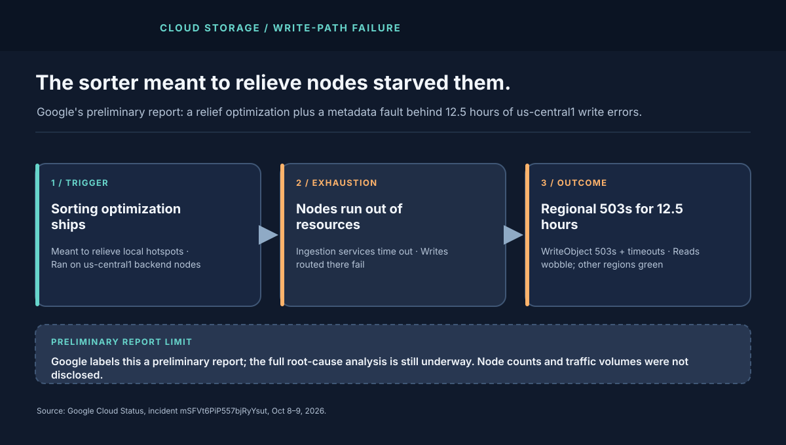
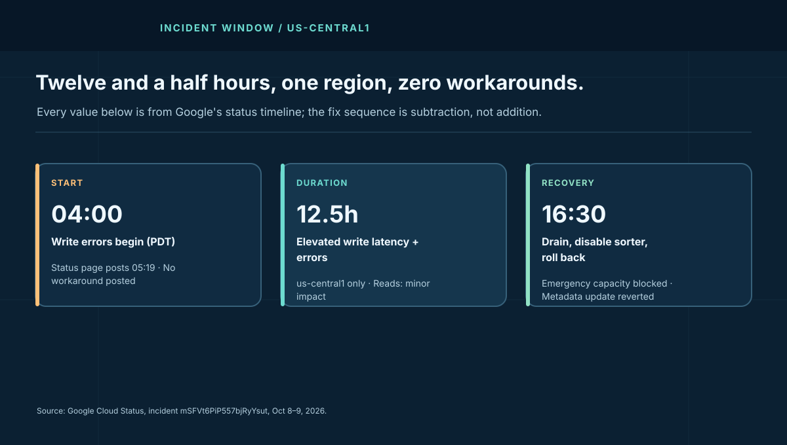

1. Writes Failed. Reads Wobbled. The Region Stayed Red.
Google's timeline is unusually precise about the shape. Upload and write operations in us-central1 saw elevated latency and error rates starting 04:00 PDT; the status page posted at 05:19 PDT. Customers primarily observed HTTP 503 UNAVAILABLE on WriteObject plus client-side timeouts. A smaller subset of reads also degraded. Every other region, and every other Google Cloud service in the report's scope, stayed unaffected.
That confinement is the first design clue. A global control-plane bug would have crossed regions. A regional backend-capacity fault would not. Google's preliminary cause points at specific storage backend nodes inside us-central1 — a local pool, not the whole fleet.
2. The Architecture: A Distributed Backend With a Sorting Brain
Cloud Storage ingests objects through a highly distributed backend: front ends accept WriteObject, a placement and sorting layer steers bytes toward backend nodes with headroom, those nodes persist object data, and a metadata service records the object so reads can find it. Each hop has its own capacity envelope — CPU and memory on the node, connection and disk throughput underneath, metadata write budget alongside.
Sorting exists to avoid hotspots. When one pool of nodes runs hotter than its neighbors, the sorter shifts load toward cooler nodes. Done well, it smooths tails. Done badly, the sorter itself becomes the most expensive process on the nodes it was supposed to protect — burning the very resources ingestion needs to complete writes.
Google's preliminary wording matches that failure exactly: a traffic-sorting optimization intended to address localized capacity constraints caused severe resource exhaustion on specific backend nodes, ingestion services began timing out, and routed writes failed. A separate metadata-database issue contributed additional errors during part of the window.
3. Why Emergency Capacity Did Not Save the Morning
The remediation sequence reads like a capacity engineer's bad day. Engineers first tried to allocate emergency capacity to the region — and were blocked by systemic regional capacity limits. There was no spare pool to borrow. So they drained traffic from the most overloaded nodes, deployed a configuration change disabling the sorting optimization, and rolled back the metadata-database update. Only after utilization normalized did drained nodes return to service.
Two lessons hide in that order. First, headroom that cannot be allocated under pressure is not headroom; it is inventory on a locked shelf. Second, the fix that worked was subtraction — removing the optimization's overhead — not addition. When the relief mechanism is the load, the fastest mitigation is to turn it off.
| US/Pacific, Oct 8 | What the report says | System-design signal |
|---|---|---|
| 04:00 | Write latency and errors begin | Backend ingestion timeouts; telemetry catches it early. |
| 05:19 | Status page posts; no workaround | Customer-side retries cannot fix server-side exhaustion. |
| Morning | Emergency capacity blocked by regional limits | Spare capacity needs pre-provisioned, pre-tested paths. |
| Midday | Nodes drained; sorter disabled; metadata rolled back | Subtract load and overhead before adding capacity. |
| 16:30 | Normal operations restored | Drained nodes rejoin only after baselines normalize. |
4. The Queue Math: How a Few Slow Nodes Stall a Region
Google disclosed no traffic or node counts, so treat this as a teaching model. Suppose the affected pool normally absorbs W writes per second across N ingestion nodes at mean service time s. Utilization per node is ρ = W·s/N. While ρ stays under roughly 0.7, queues stay short. When the sorter's overhead inflates s — say by 3–5× on the hottest nodes — those nodes cross ρ > 1. Their queues grow without bound, timeouts fire, and clients retry.
Retries are the amplifier. If each timed-out write is retried twice, offered load approaches 3× the original on exactly the nodes least able to serve it. The sorter, still trying to help, keeps steering fresh writes toward nodes it believes have headroom — headroom its own overhead just consumed. That loop converts a localized hotspot into a regional write outage even though most nodes are healthy, because the routing brain cannot see its own cost.

5. What I Would Change Before the Final RCA
Google's final report will carry the authoritative fixes. From the preliminary facts, five guardrails are already defensible:
- Budget the sorter's overhead as part of node capacity. Any placement optimization must ship with a measured CPU and memory ceiling, enforced per node, with automatic disable when overhead exceeds its relief value.
- Pre-provision emergency capacity paths. If regional limits can block a rescue allocation, the rescue was never real. Reserve, rehearse, and monitor the emergency lane separately from steady-state headroom.
- Isolate metadata from object ingestion fate. A concurrent metadata fault during an ingestion crisis doubles the blast. Separate latency budgets, bulkheads, and rollback handles for the two paths.
- Make drain-and-disable a one-click runbook. The winning moves — drain hot nodes, kill the optimizer, roll back metadata — should be a rehearsed sequence with blast-radius checks, not mid-incident improvisation.
- Publish write-path bulkhead behavior. Customers need to know whether reads stay clean during a write crisis, how 503s should be retried, and when to fail over regions. "No workaround" is honest; a pre-published retry and failover guide is better.
The companion to read alongside this one is the us-west1 Persistent Disk teardown: same vendor, same lesson through a different organ — the disk is the control plane. And keep this incident separate from the September us-central1 network isolation, which was fiber maintenance, not storage.
6. Field Glossary: Eight Terms This Incident Teaches
Half of outage literacy is vocabulary. Here are the eight terms worth carrying out of this incident, each grounded in what the report actually describes:
| Term | What it means here | Why it mattered on Oct 8 |
|---|---|---|
| WriteObject | The GCS API call that uploads object bytes. | The failing operation; customers saw it return 503s and time out. |
| HTTP 503 UNAVAILABLE | "I exist but cannot serve you right now — retry later." | The honest signal. A 503 means back off with jitter, not hammer the same path. |
| Placement / sorting layer | Logic steering writes to backend nodes with headroom. | The optimization that became the load; its overhead exhausted the nodes it favored. |
| Resource exhaustion | A node runs out of CPU, memory, connections, or disk throughput. | Ingestion services on hot nodes timed out; routed writes died with them. |
| Metadata service | The record of what objects exist and where their bytes live. | Its separate fault added errors — object data and object records failed independently. |
| Traffic drain | Deliberately steering load away from sick nodes. | The mitigation that worked: stop feeding the nodes that cannot chew. |
| Config rollback | Reverting a change to its last-known-good state. | Disabled the sorter; reverted the metadata update. Subtraction beat addition. |
| Preliminary vs final report | Early mechanism disclosure vs completed root-cause analysis. | Everything causal here carries the preliminary tag until Google's RCA lands. |
7. Operator Playbook: Your First 30 Minutes of Regional Write 503s
When your dashboards show WriteObject 503s climbing in one region, run this sequence before theorizing:
- Minute 0–5: scope it. Is the failure one bucket, one region, or global? Check per-region error rates and the provider status page. Single-region plus healthy neighbors means backend fault, not your deploy — stop rolling back your own release.
- Minute 5–10: bound your retries. Cap retries at 2–3 attempts with exponential backoff and full jitter, and set a per-request deadline your users can tolerate. Unbounded retries convert their outage into your self-inflicted load spike. Google's report lists no customer workaround; disciplined retries are the workaround.
- Minute 10–20: shed non-critical ingest. Pause batch backfills, log archival, and thumbnail pipelines. Every deferred byte is capacity returned to the revenue path. If you cannot shed by priority, you have no priorities — only traffic.
- Minute 20–30: decide on failover. If your objects are dual-written or replicated, shift critical writes to a healthy region and tell customers where to read. If they are not, say so plainly in your status update and give the next check-in time. "We are waiting on the provider with retries bounded and backfills paused" is a respectable minute-30 posture.
Afterward, rehearse the two capacities this incident exposed: emergency headroom you can actually allocate (test the allocation path quarterly, not the headroom number) and a documented degraded mode (queue-and-replay beats fail-and-apologize for most write workloads). The SRE observability course covers per-region burn-rate alerts that would have paged on this shape within minutes.
8. The Cost Model
Pricing an outage Google did not price requires labeled assumptions. Take a mid-size customer writing 50,000 objects per hour into us-central1 with 2% of writes mapping to revenue-blocking events worth a modeled $5 each in delayed margin. At a modeled 15% write-failure rate over 12.5 hours, failed revenue-blocking writes land near 1,875, for a modeled exposure around $9,400 — before support load, retry egress, and churn. Scale the write rate or the margin per event linearly; the template matters more than the plug numbers.
Price the protection instead. Cross-region dual-write for the critical 10% of objects plus a tested failover runbook is a standing cost — extra storage, extra operations, rehearsal time. Run it through the downtime cost calculator with your own revenue per hour: if one 12.5-hour regional write degradation costs more than a year of dual-write overhead, the replica was cheap. Google's report does not give customer loss figures, so every dollar here is illustrative.
Appendix A. Worked Example: Sizing Dual-Write Protection
All numbers below are a labeled teaching model — Google disclosed none of them. The method is the point; substitute your own fleet values into the same rows. Take a team writing 200,000 objects per day into us-central1 at an average 4 MB per object: roughly 800 GB of new bytes daily, about 9 objects per second average with peaks near 40 per second. Declare the critical 10% — 20,000 objects, 80 GB per day — as the set that must survive a regional write degradation, and dual-write only that prefix to a second region from day one.
| Cost line | Modeled math | Monthly |
|---|---|---|
| Second copy, 30-day retention | 80 GB/day × 30 days = 2.4 TB at ~$0.02/GB | ~$48 |
| Extra Class A operations | 20,000 × 30 = 600k ops at ~$0.05/10k | ~$3 |
| Cross-region replication egress | 2.4 TB at modeled ~$0.08/GB | ~$190 |
| Quarterly failover rehearsal | 2 engineers × 4 h × 4/yr, amortized | ~$215 |
| Standing protection total | storage + ops + egress + drills | ~$456 |
Now the backlog side. A 12.5-hour degradation at the average 9 objects per second parks roughly 400,000 objects in retry queues (peaks push it higher). Draining that at 2× normal ingest takes over 6 hours after recovery — which is why the drain-rate term belongs in your incident declaration ("recovered" means writes accepted and backlog cleared). Run your own arrival and drain rates through the queue backlog drain calculator; if the drain tail exceeds your recovery objective, the fix is pre-provisioned drain capacity, not hope.
Set ~$456/month against §8's modeled single-incident exposure near $9,400 for a mid-size fleet: protection pays back if a regional write degradation hits roughly once every twenty months — and that is before counting the rehearsal dividend, because the team that game-days failover quarterly also responds faster to every other incident. The replica is not insurance against Google; it is leverage over your own recovery clock.
Appendix B. Reference Posture: The Write Path I Would Sign Off On
If this teardown were a design review, here is the checklist that earns a sign-off — each item traceable to a paragraph of the preliminary report:
- Regional write SLO with per-bucket 503 alerting. Alert on WriteObject 503 rate and p99 latency per bucket per region, not on fleet averages. The incident's first detectable signal was exactly that shape at 04:00.
- A shared retry library with ceilings. Every writer uses bounded retries (≤3), exponential backoff with full jitter, and per-request deadlines. No service hand-rolls its own retry loop; the library is the policy.
- A written shed order. Batch backfills, log archival, and derived pipelines pause in a documented sequence. Shedding decided mid-incident is negotiating with the fire.
- Dual-write for the critical prefix. The 10% that blocks revenue writes to two regions always; the 90% queues and replays. Appendix A prices it.
- Quarterly failover game-day. Shift critical reads and writes, verify the runbook's timings, then shift back. Untested failover is the BLR1 lesson wearing GCS clothes.
- An RCA watch owner. One named engineer owns tracking Google's final report, extracting its guardrails, and filing the resulting work items. Preliminary reports fade from memory; watch owners prevent that.
- A status template that states degraded mode. "Writes to us-central1 failing; critical prefix on eu-west1; backfill paused; next update 30 min" — customers can plan around a posture, never around silence.
None of this requires Google's final RCA. Every item is defensible from the preliminary facts alone, which is precisely the standard to hold: design the fix from what is already proven, then sharpen it when the final report lands.
Appendix C. Deep Dive: What "Resource Exhaustion" Means Inside an Ingestion Node
"Resource exhaustion" in the preliminary report compresses four distinct ways a storage node can suffocate. Each fails differently, and telling them apart is what turns a 12-hour outage into a 12-minute diagnosis next time.
CPU starvation. The sorting optimization presumably ran classification and placement arithmetic on the ingestion path — comparing node loads, re-ranking destinations, recomputing assignments per batch. Sorting is O(n log n) thinking strapped to a per-request budget: under skewed load it burns rider CPU on every node it touches, stealing cycles from the serialization, checksumming, and encryption that actually complete writes. Symptom signature: user-space CPU pinned while disk sits idle — the node is thinking instead of writing.
Memory pressure. Sorters buffer. To rank destinations, the layer holds in-flight write descriptors, node-state snapshots, and pending batches in memory. As ingestion slows, buffers grow; as buffers grow, garbage-collection pauses lengthen (or the OOM killer sharpens its axe). The cruel loop: the slower the node, the more state the sorter holds about the slowness, consuming the memory that would relieve it. Symptom signature: climbing heap with lengthening GC pauses preceding the timeout cliff.
Connection and thread exhaustion. Each routed write holds a connection and a worker while it waits. Timeouts do not free workers promptly — they linger through deadline windows, and retries open more connections to the same sick nodes. A pool of 1,000 workers with 4-second stalls serves 250 writes per second; the same pool at healthy 40 ms serves 25,000. The sorter did not need to break anything to cut capacity 100× — it only needed to slow the path while retries multiplied the mouths. Symptom signature: queued requests rising while active disk throughput falls.
Why draining works is pure queueing. A node recovers only when its utilization ρ drops below 1 — arrival rate times service time over capacity. Draining cuts arrivals; disabling the sorter cuts service time. Either alone might not cross the ρ = 1 line; Google did both, which is why the combination appears in the report as a sequence (drain, disable, roll back) rather than a single heroic fix. The metadata rollback matters here too: every write pays a metadata cost, so a sick metadata path inflates service time exactly like a sick data path. Two inflations, one ρ — both had to go.
9. The Verdict
Credit Google for a fast preliminary report with a concrete mechanism and an honest "blocked by capacity limits" admission. The architecture still let one optimization's overhead plus one metadata fault hold regional writes for half a day. Until the final RCA lands, treat every claim above marked preliminary as exactly that — and treat the runbook gaps as yours to close before your own sorter learns the same lesson.
Twelve hours of 503s. One sorter. Zero spare rooms.
Sources and Method
Window, symptoms, preliminary causes, and remediation steps are attributed to Google's status report for incident mSFVt6PiP557bjRyYsut, including the Oct 9 preliminary write-up. Queue math and cost figures are Buildopsy's labeled scenario models. No backend counts, traffic volumes, or customer losses were disclosed.